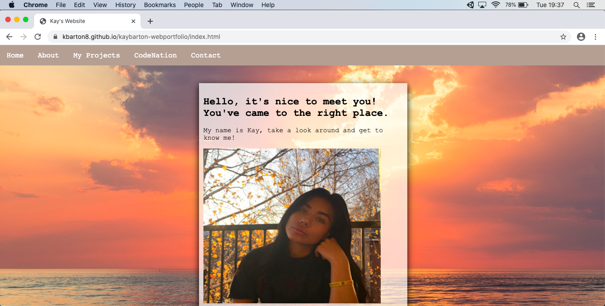

1.1 Describing the content and layout for each page.
Homepage - This is the page that will appear first when accessing my website. This page is kept simple, a sunset background is used with a transparent box to the left centre which includes some text, a photo of me and an audio file which auto plays. The page includes a sub nav bar, which is repeated on every page.Who am i? - This page is accessed via the about section on the navigation bar. A heading is used with text then below is a section explaining who I am, interests, education, skills, location.
Kay’s world - This page shows a short insight into my life, including videos and images. A YouTube video is displayed from my channel which auto-plays. A header is included explaining the page.
Python - This page includes the Python game me and my team at Code Nation made with a description.
Unit1 - This page includes all the work I completed for Unit 1 trying to add as many page breaks to allow it easier to be read.
Unit2 - This page includes all the work I completed for Unit 2 trying to add as many page breaks to allow it easier to be read.
Contact - This page includes a contact form with name and subject, a submit button is below.
1.5 Describing the copyright and other constraints affecting websites
If you are wanting to use anything on your website that you do not own for example an image or video if it is watermarked or signed then you are not able to do this without the owner's permission which is why careful consideration was taken into what images were included. If you do not get permission, there is the risk of the owner suing you.1.6 Describing issues that people with disabilities may face when using webpages and how we can overcome them
It is important to make sure when creating a website, the whole target audience is considered. By doing this you will understand you need to make the website friendly to those who have difficulty’s or disabilities. For those who are visually impaired larger text would be more suitable, or a specific colour of text. One way to enable user friendly experience could be to make a neighbour website those who have impairments can click to have an easier version to understand.1.7 Describe which hare the appropriate filetypes for websites
Images: JPEG, PNG, GIFVideos: MP4
Audio: MP3
Text Document: PDF
3.1 Test your site appropriately to make sure it works on different browsers

3.3 Use Github pages to launch your site
link1: https://kbarton8.github.io/kaybarton-webportfolio/
Link2:https://github.com/kbarton8/kaybarton-webportfolio